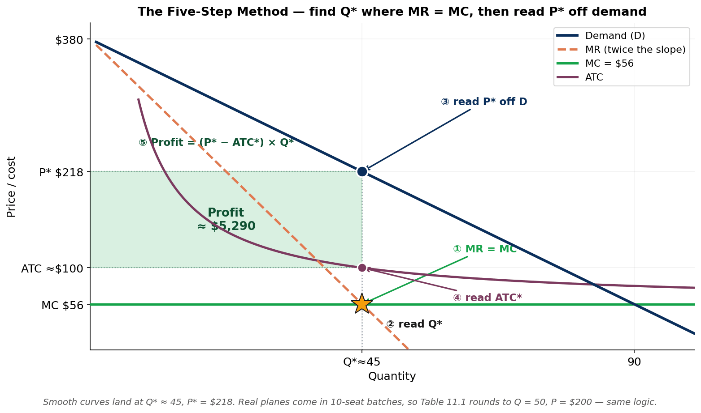

ECON 1116 • Principles of Microeconomics • Chapter 11
Market Power — Monopoly and Price Discrimination
Forty thousand fans, one Uber app, and an algorithm that sets the price — what happens when a single firm is the market?
Dr. Richeng Piao
Department of Economics Northeastern University
Learning Objectives
11.1
Identify the five sources of monopoly power — and tell physical moats from digital moats
11.2
Find a monopolist’s price & quantity with the 5-step MR = MC method, and explain why MR < P
11.3
Calculate the deadweight loss of monopoly — and weigh rent-seeking against the innovation defense
11.4
Classifyfirst-, second-, and third-degree price discrimination — from airlines to AI pricing
11.5
Apply antitrust law, compute CR4 and HHI, and judge when contestability disciplines a monopolist
Quick Recall — Chapter 10
In perfect competition, where does price end up in the long run — and what is economic profit?
Why can’t a competitive firm raise its price even one penny above the market?
Today’s pivot: what changes when there are no competitors and no entry — when the firm is the market?
Discuss with your neighbor — 90 seconds.
Hook — The Concert Lets Out
An Ariana Grande concert ends. 40,000 fans open Uber at once — ride demand spikes fourfold in 90 seconds.
The algorithm deploys a surge multiplier: dormant drivers log on (supply rises), price-sensitive riders opt out (demand falls). Wait times settle in minutes.
On a New Year’s Eve, Uber switches surge OFF as a goodwill gesture:
No price signal → no new drivers appear
Wait times spike; many requests go completely unfulfilled
Castillo (Econometrica, 2025): surge raises welfare ~2% — but the firm that owns the algorithm decides who pays
Market Power
the firm doesn’t just join the market —
it dictates the terms
Chapter 10 was the firm too small to move the price. Now: the opposite extreme.
Section 1 · LO 11.1
Sources of Monopoly Power
Every monopoly rests on a barrier — the only question is what kind
The Polar Opposite of Perfect Competition
Last chapter
Price-taker. Identical product, free entry, sells all it wants at the market price — but can’t charge a penny more. Flat demand: P = MR.
This chapter
Monopoly. The sole seller, no close substitutes. It is the industry, so it faces the entire downward-sloping demand curve.
Monopoly — a single firm is the only seller of a good with no close substitutes. Market power — the ability to raise price without losing all your customers (a downward-sloping firm demand curve). A monopolist has the maximum of it.
Market power is a spectrum: perfect competition (none) → monopolistic competition & oligopoly (some, Ch 12–13) → monopoly (the most).
Barriers to Entry — the Moat
Barriers to entry — obstacles that keep new firms out, letting incumbents sustain economic profit in the long run.
20th century
Physical moats — railroads, oil wells, steel mills. Barriers made of capital.
21st century
Digital moats — software ecosystems, data, network effects. Lock in billions at near-zero marginal cost.
What Is Market Power? — The Google Case
Search, YouTube, Maps, Gmail, Android, Chrome — one firm, the whole ecosystem.
Market power — the ability to have some control over the price. A price-taker (Ch 10) has none; Google has a lot.
In 2021, Google’s market value was nearly $2 trillion.
It sells advertising worldwide — companies pay to show up more prominently in search results.
Some advertisers pay over $50 per click; the average is closer to $11.
Barriers to entry are the key to the market power of monopolies.
When Market Power Draws a Lawsuit
January 2023: the U.S. Department of Justice sued Google for monopolizing digital advertising technologies.
That’s the same ad-auction business from the last slide — the $11-a-click engine behind a near-$2-trillion company.
Having market power is legal. Abusing it to lock out rivals is what antitrust targets.
We’ll return to the full Google antitrust story — and its remedy — in §11.5.
Five Sources of Monopoly Power
Most real monopolies combine several — but each starts here.
1. Control of a key input. Own a resource rivals can’t replicate — ore, land… or software.
2. Switching costs & network effects. The cost of leaving — and the pull of where everyone already is.
3. Product differentiation & branding. Make consumers see your product as genuinely one-of-a-kind.
4. Economies of scale & natural monopoly. One firm serves the whole market more cheaply than two.
5. Government-created monopoly. Patents, franchises, licenses — the state grants exclusivity.
1 · Control of a Key Input
Physical — rubber, 1900s
Britain moved rubber trees to blight-free Asian plantations. When Ford tried to copy it — “Fordlandia,” 1927 — Amazon leaf blight destroyed it. The barrier was biological.
Digital — Nvidia, 2020s
~86% of AI accelerator chips. But the moat is CUDA — 20 years & 4M+ developers built on it. Rewriting that code costs years.
The H100 GPU costs ~$3,320 to make and sells for ~$28,000 — an 88% gross margin that only an extreme switching cost can defend.
The input that matters is no longer the silicon — it’s the software ecosystem locked on top of it.
Deep Dive — Fordlandia & the Rubber Monopoly
Fordlandia today — Ford’s plantation town, reclaimed by the jungle.
Latex tapped from the rubber tree — the input Britain controlled.
The barrier: Britain moved rubber-tree seeds to blight-free plantations in Asia, cornering global supply — a monopoly on the key input.
Why Ford failed: in the tree’s native Amazon, leaf blight raced between close-planted trees and destroyed Fordlandia. The barrier was biological.
Same logic, a century later: control the input rivals can’t replicate — rubber then, CUDA now.
Control of a Key Input → Strategic Location
Modern example: Starbucks’ location strategy.
The key input: Starbucks secures prime real estate in high-traffic spots — busy corners, campuses, transit hubs.
Location premium: a Starbucks by Tufts Medical Center charges $3.65 for brewed coffee vs $2.95 at a store farther away.
The “third place”: comfy seats + Wi-Fi turn shops into destinations — so it can charge more, reinforcing market power through location control.
The Premium Spot — Starbucks at Tufts Medical Center
High-traffic location by the medical center.
Freshly Brewed Coffee: $3.65
Prime, high-traffic real estate → $3.65 for a basic brewed coffee. The captive foot traffic is the barrier.
Two Blocks Away — Same Coffee, $2.95
A store farther from the foot-traffic hub.
Freshly Brewed Coffee: $2.95
Same coffee, $0.70 cheaper — the gap is the location premium. Control the prime spot, and you control the price.
Control Over the Key Factor of Production — AI Chips
One 8×B200 server: $430,500 — the physical silicon.
In the AI era, the critical input isn’t crude oil — it’s specialized semiconductor hardware.
NVIDIA 80–90%
AMD 5–8%
Share of the global AI accelerator chip market
$130B+ in data-center revenue in 2025 alone. Rivals are left scrambling for single-digit share.
The question: why can’t a rival just engineer a faster chip and steal the market back?
The Razor and the Razor Blade
The chip is the razor. The software is the razor blade — and that’s where the lock-in lives.
Above the surface — the Razor
Physical silicon (H100 / Blackwell GPUs). Interchangeable, bound by physics — a rival can match it.
Below the surface — the Razor Blade
CUDA software platform — the proprietary translation layer between developer code and the physical math of the chip.
While rivals chased silicon physics, Nvidia made CUDA the definitive programming language of global deep-learning research and enterprise deployment.
The Architecture of Software Lock-In
AI Developer
CUDA ecosystemNvidia hardware stays locked in
Cheaper rival hardwareblocked by the switching cost
The switching cost: rewriting years of accumulated code, untangling massive software libraries, and retraining engineers on an entirely new programming interface.
Takeaway: a cheaper chip can’t win developers over — the labor cost and time delay of switching are catastrophic.
2 · Switching Costs & Network Effects
Switching cost — what you pay in money, time, or lost data to leave. Years of apps, an Apple Watch, iMessage, the blue bubble … ~58–60% of US users stay on iPhone, so Apple charges a 15–30% App Store cut.
Network effect — the product is worth more as more people use it. Consoles, social media, messaging → the market tips toward one platform, with no patent or grant required.
Network Good with Switching Costs
Your first console pulls in the next one.
Your first console → your friends on the same platform → your next console on the same platform.
Network good: a good whose value to each customer rises with the number of other people who use it.
Other examples: your first pharmacy, your first bank, your first credit card — each gets stickier as more people are on it.
Two-Sided Market with Switching Costs
An app store: two sides, one platform.
End users
App developers
App / game stores connect two sides — end users and developers — on one platform.
High switching costs make it hard to leave after you’ve bought apps — your library doesn’t come with you.
Contract Switching Costs
Switching costs occur when customers must give something up to switch to a competing product — here, a cash penalty for leaving early.
Carrier
Smartphone fee
Basic phone fee
AT&T
$325
$175
Sprint
$350
$200
Verizon
$350
$175
Early-termination fees (ETFs) for leaving a phone contract before it ends.
The fee depends on
your contract terms & proration
the time remaining
the device you bought
A deliberate barrier to leaving — even when a rival is cheaper.
iPhone and Its Ecosystem
Market power
Millennials are the largest share of US iPhone users; Gen Z 61% and teens 82% adoption.
Usage & spending
89 interactions/day, 5.6 hrs/day; ~$154/yr on apps & subscriptions.
Dominance
The iPhone holds over 58% of the US smartphone market — the deeper the ecosystem, the higher the switching cost.
The Engineered Moat — Ecosystem Lock-In
The most insidious modern moats are engineered: tech giants intentionally inflate switching costs so neither consumers nor developers ever leave.
Each layer Apple adds raises the cost of leaving:
The blue bubble — iMessage social capital
Seamless Mac & AirDrop integration
Years of historical app purchases
Accumulated health & device data
$161B
estimated global App Store revenue in 2025 — engineered friction trapping a captive base of ~1 billion people.
The Architecture of the Walled City
Path A — digital goods
In-app purchases & subscriptions → the 15–30% App Store tax.
Path B — physical services
Food delivery, rides → the 0% exemption. No cut taken.
Why let food trucks operate tax-free? The walls are made of code, not stone. Apple waives the tax on essential physical services — if people can’t eat or commute through the ecosystem, they’ll abandon it. The exemption is calculated ecosystem preservation.
Behavior, Not Just Size, Violates Antitrust Law
Having a monopoly is legal. It’s the abusive, exclusionary behavior — not the size — that breaks the law.
DOJ Sues Apple — Monopolizing Smartphone Markets
The DOJ’s 2024 case lists five exclusionary tactics — blocking super-apps, suppressing cloud gaming, degrading cross-platform messaging, hobbling non-Apple watches, and limiting third-party wallets.
The real question: is Apple’s exclusion of cross-platform features enhancing user experience, or just boosting iPhone sales? The DOJ argues the latter.
AirTags, Tile, and the Senate Hearing
Apple launched AirTags the same week a Senate antitrust hearing took up Tile — a third-party tracker Apple now competes against.
Tile testified Apple “unfairly limits competition.” The platform owner can quietly hobble rivals it also sells against — self-preferencing is the heart of the case.
“Buy Your Mum an iPhone”
Asked why videos from an Android relative look bad, Tim Cook’s answer was: “Buy your mom an iPhone.”
Why lock consumers in — a genuinely better ecosystem, or engineered friction that makes leaving too costly? That tension is the whole chapter.
3 · Product Differentiation & Branding
Make the product feel unique — and competition softens into pricing power.
Tesla
Early self-driving lead + a proprietary Supercharger network legacy automakers couldn’t match.
Red Bull
Extreme-sports identity so strong rivals can’t enter — despite trivially low production cost.
Rolex · Mercedes
Decades of brand image → prices far above production cost, sustained by perception alone.
Apply Differentiation is the weakest barrier — it’s the whole story of Chapter 12 (monopolistic competition), where rivals can enter with their own twist. Here it’s one ingredient in a bigger moat.
Innovation → Product Differentiation
Tesla Autopilot — self-driving as the differentiator.
Tesla Autopilot: self-driving capability sets a new market standard rivals scramble to match.
Product differentiation: a genuinely unique product lets a firm command premium prices.
Result: higher profitability and a defended market position.
Marketing → Product Differentiation
Red Bull’s extreme-sports spectacles. (Click to play.)
Strong brand identity: Red Bull’s positioning makes it hard for rivals to enter — despite a near-zero production cost.
The entire price premium is brand, not the liquid in the can.
Example: Tesla Supercharger
The Supercharger network — three moats in one.
Control of a key input → prime charging locations.
Charging network → switching costs (leave Tesla, lose the network).
More chargers → lower ATC (economies of scale).
One product, three reinforcing moats at once — the sources of monopoly power rarely come alone.
4 · Economies of Scale & Natural Monopoly
Natural monopoly — one firm can supply the whole market at lower average cost than two could. Arises with very high fixed cost + very low marginal cost.
Electric grid. ~$21.9B/yr US fixed cost; the cost of one more kWh is tiny. Two competing grids = both charge more.
Starlink. ~$10B+ sunk, 8,300+ satellites, 10M+ subscribers (2026). One more subscriber ≈ the cost of mailing a dish. A rival must rebuild the whole constellation.
Example: Electricity Transmission
Generation → Transmission ($21.9B/yr) → Distribution — one company can wire all of Boston’s 279,495 homes.
A second $21.9B grid would split the customers → both firms’ ATC rises. One firm is cheaper — a natural monopoly.
Natural Monopolies
A natural monopoly is an extreme economy of scale: LRATC declines continuously as output rises.
Efficient as one firm — cheapest for a single firm to make the whole industry output.
High fixed cost, low MC — the grid is huge to build, ~free to use.
Splitting raises cost — two firms each duplicate the fixed cost: ATC jumps $100 → $200.
Case Study — SpaceX’s Starlink
Low-Earth-orbit internet — a 21st-century natural monopoly.
$10 Billion
The sunk cost — launching thousands of satellites + proprietary rockets.
10 Million
The scale — active subscribers by February 2026.
The Math of Zero Marginal Cost
The competitor’s dilemma: a rival spends $10B to build a parallel constellation, then must split the global customers. Neither firm gets enough to cover its $10B debt — both go bankrupt.
The math dictates only one survives. That is a natural monopoly.
Synthesis — Anatomy of a Digital Monopoly
The strongest modern moats combine all three pillars at once:
1. Algorithmic market-making — set prices, shape demand.
3. Economies of scale — turn huge fixed capital into zero-marginal-cost expansion.
When all three reinforce each other, the moat looks permanent. Whether it really is — that’s §11.5. Two or three firms inside the moat → oligopoly (Ch 13); many with differentiated products → monopolistic competition (Ch 12).
Think Like an Economist
Pick one company you depend on every single day — your phone, search engine, or streaming service.
Which of the five sources protects it? Could a startup realistically compete with it tomorrow — and what would it have to overcome?
Turn to a neighbor — name the barrier out loud.
2 min
Section 2 · LO 11.2
How a Monopolist Sets Price
One demand curve, one rule: MR = MC — and why MR is always below price
The Monopolist Faces the Whole Demand Curve
To sell one more unit, it must cut the price — on every unit. That splits each new sale into two opposing forces:
Quantity effect (+) — revenue from the new unit sold.
Price effect (−) — revenue lost on all the units that used to sell at the higher price.
The price effect always drags revenue down, so MR < P at every quantity. The MR curve lies below demand, with twice the slope.
A Worked Example — the Monopoly Airline
One remote island, one runway, one airline. FC = $2,000 (sunk plane & gate), MC = $56/passenger. To sell more seats it must drop the fare for all.
Q
P
TR
TC
ATC
MR
MC
Profit
10
$344
$3,440
$2,560
$256
—
$56
$880
30
$272
$8,160
$3,680
$123
$200
$56
$4,480
40
$236
$9,440
$4,240
$106
$128
$56
$5,200
50
$200
$10,000
$4,800
$96
$56
$56
$5,200
60
$164
$9,840
$5,360
$89
−$16
$56
$4,480
90
$56
$5,040
$7,040
$78
−$232
$56
−$2,000
Profit peaks at Q = 50, where MR = MC = $56. Read the price up on demand: P = $200. Profit = (P − ATC) × Q = ($200 − $96) × 50 = $5,200.
Seeing It on the Graph — MR Below Price
Demand slopes down. The MR ledger (orange) falls twice as fast — and lands far below price.
At Q* = 50, the running MR crosses MC = $56 (gold star). But the price is read off demand: P* = $200.
The gap is the point: P = $200 while MR = $56. Never read price off the MR curve.
The Five-Step Method — Any Monopoly Problem

Find the quantity where MR = MC.
Read Q* off the horizontal axis.
Read P* up on the demand curve (not MR!).
Find ATC at Q*.
Profit = (P* − ATC) × Q* — the rectangle.
Smooth curves land at Q* ≈ 45, P* = $218; the table’s 10-seat batches round to Q = 50, P = $200. Same logic.
Common Misconception
“A monopolist charges the highest possible price.”
It could charge $344 — but then it sells only 10 seats and earns just $1,440. The profit-maximizing price is $200, well below the top of the demand schedule.
A monopolist doesn’t charge as much as possible — it charges where MR = MC, which pins it to one specific point on the demand curve. Higher price ⇒ too few buyers; lower price ⇒ margin too thin.
Monopoly Is Not a Guarantee of Profit
If demand sits entirely below ATC, the monopolist still produces at MR = MC — but the price it reads off demand is below ATC. It loses money.
Short run: keep operating if P > AVC. Long run: exit — exactly like a competitive firm.
Monopoly gives the power to restrict output and raise price. It does not give the power to create demand that isn’t there. Being the sole seller of something nobody wants is not profitable.
Also a myth: “Monopoly is illegal.” Having one is legal. Abusing anticompetitive tactics to get or keep one is not — that’s §11.5.
Poll — Should the Airline Sell More Seats?
At Q = 50 the airline could expand to Q = 60. The demand price there is $164, but the MR of those 10 seats is −$16, while MC = $56. Should it sell them?
A. Yes — P = $164 is well above MC = $56, so each seat is profitable
B. No — MR = −$16 is below MC = $56, so the extra seats destroy profit
C. Yes — filling more seats always raises total revenue
D. Only if it first finds a way to lower MC
Click your answer. Press ↓ for results.
Poll Results
Answer: B. A monopolist expands only while MR > MC. Here MR = −$16 < MC = $56, so those seats lose money — total revenue actually falls from $10,000 to $9,840.
A is the classic trap: it compares the demand price ($164) to MC, ignoring the price cut on the first 50 seats. Decision rule is always MR vs MC.
Halfway
5-Minute Break
Up next: what monopoly costs society — and how firms charge you a different price than the person next to you
Press 5 to start the timer
Section 3 · LO 11.3
The Welfare Cost of Monopoly
Less output, higher price — and a triangle nobody gets to keep
Monopoly Breaks the First Welfare Theorem
Chapter 10: perfect competition sets P = MC, output at the efficient level, total surplus maximized — the First Welfare Theorem (Ch 6).
A monopolist produces less and charges more. The lost value of trades that would have helped both sides — but never happen — is the deadweight loss of monopoly.
P > MC means the last buyer values the good above its cost — yet the sale is blocked.
Consumer Surplus, the Transfer, and the Lost Triangle
Competition would give Q = 90 at P = $56. Monopoly gives Q = 50 at P = $200.
Transfer (orange): $144/ticket moves from consumers to the firm. A wash for society.
Deadweight loss (red): 40 trips worth more than $56 never happen. ½ × 40 × $144 = $2,880 — pure loss, nobody’s gain.
The Deadweight Loss You Can’t See
DWL is hard to see because it shows up as things that never get built.
Apple’s marginal cost to host an app is a fraction of a cent — yet it takes a 15–30% cut. At a competitive rate, millions of niche indie apps would exist. The ones never built — the software never bought, the utility never felt — that is the deadweight loss.
The triangle isn’t abstract — it’s the startup that never launched.
Rent-Seeking — Spending to Stay on Top
Rent-seeking — using real resources (lobbying, litigation, political influence) to capture wealth without creating any new wealth.
Because monopoly profits are huge, firms spend real money to defend them — money that builds nothing.
$100M+
Top-5 US tech firms’ 2025 federal lobbying — Meta, Amazon, Microsoft, Google, Apple
€151M
EU digital-industry lobbying, 2025 (+33% vs 2023) — much aimed at softening the Digital Markets Act
Meta alone kept ~87 lobbyists in Washington — about one for every six members of Congress. Pure economic waste.
X-Inefficiency — No Pressure to Be Sharp
X-inefficiency — operating above minimum cost because no competitor forces you to be efficient.
British Airways, state-owned in the 1970s: overstaffed, bureaucratic, bloated. After privatization and competition, costs fell sharply.
USPS, with a legal monopoly on first-class mail, has long drawn criticism for delays, high labor cost, and management slack.
Competition is a discipline. Remove it, and the firm drifts off its own cost curve — the slack a rival would never allow.
The Innovation Defense — the Other Side
Monopolists’ counter-argument: supernormal profits fund risky, expensive innovation that competitive firms could never afford.
Frontier AI: training cost grows ~2.4×/yr; a single 2027 run nears $1B. If rivals could copy the finished model free, nobody would press “run.”
Starlink: $10B+ invested before meaningful revenue. Private capital funds bets that big only when a dominant, profitable share is the prize.
Evaluate DWL is a cost today; the innovation it funds is a benefit tomorrow. Which wins? One of the great open debates — and the exact tension behind drug patents (Ch 16).
Think Like an Economist
Economists measure the deadweight loss inside the market the monopolist controls.
But is there also a welfare gain from the innovations those profits funded? How would you decide whether the gain outweighs the loss?
Argue both sides — 2 minutes.
2 min
Section 4 · LO 11.4
Price Discrimination
What if the firm could charge each customer a different price?
Charging Different Prices for the Same Thing
Price discrimination — charging different prices to different consumers for the same good, not justified by cost differences.
It needs three conditions:
1. Market power — a downward-sloping demand curve.
2. Identify or sort consumers into groups by willingness to pay.
3. Prevent arbitrage — stop resale between groups.
First-Degree — Each Buyer’s Exact Willingness to Pay
The firm captures every dollar of consumer surplus. Nearly impossible — but the data economy is closing the gap.
Amazon, 2000. Caught charging different DVD prices by browsing history. Backlash was instant; Bezos called it a “random discount” and refunded. Lesson: overt personalized pricing enrages people.
Delta, 2025. AI-driven personalized fares with startup Fetcherr — from 1% of domestic seats toward 20% by year-end. An algorithm that may know your willingness to pay better than you do.
Framing: a “coupon for you” feels like a gift; a “surcharge for you” feels like theft — though the economics is identical. Firms learned to frame PD as discounts for some, never surcharges for others. (More in Ch 18.)
Second-Degree — Build a Menu, Let Buyers Sort Themselves
The firm can’t tell who you are — so it designs options and lets you reveal your type by choosing.
Quantity discounts. Costco 50-bag box at $0.45/bag vs $0.50 at the corner store.
Versioning. Tesla Model Y: $39,990 → $57,490, same shell, software-gated tiers.
Two-part tariffs. Gym: $300/yr + $10/class. Buffet: $20 in, $0/plate.
Bundling. $15 CD (12 songs) → iTunes $0.99 unbundled → Spotify re-bundles 100M songs at $10.99.
Netflix tiers: $6.99 ad-supported vs $22.99 premium — a $16 gap for the same library. Cinephiles self-select up; budget households (higher elasticity, Ch 5) self-select into ads. ~70M ad-tier users by 2025.
Third-Degree — Different Price to an Observable Group
Spotify. $11.99 Individual vs $5.99 Student. Students have higher elasticity; a .edu check prevents arbitrage. Charge them full price and you lose them entirely.
Airlines. Business travelers (last-minute, inelastic) pay premium fares; leisure travelers (flexible, elastic) pay discounts. The ticket is non-transferable — arbitrage blocked.
The logic is always elasticity: charge the inelastic group more, the elastic group less. Segment by an observable trait — age, student status, location, timing — and stop resale.
Key contrast with second-degree: here the seller observes your group and assigns the price; there, you pick from a menu.
Data Snapshot — FTC Surveillance Pricing
The FTC’s 2024–25 6(b) study found 250+ businesses using browser cookies, device data, and precise location to generate individualized prices.
Some tracked your cursor: drift toward the close button → a discount pop-up fires instantly.
Pharmacies excluded loyal customers from promos (inelastic) while targeting codes at infrequent buyers (at risk of leaving).
Source: FTC Surveillance Pricing 6(b) Study, January 2025 · ftc.gov/surveillance-pricing
Poll — Classify the Price Discrimination
Spotify charges $11.99 for Individual and $5.99 for a verified Student plan. This is…
A. First-degree — each person’s exact willingness to pay
B. Second-degree — a menu the buyer self-selects from
C. Third-degree — a different price to an observable group
D. Not price discrimination — it reflects a cost difference
Click your answer. Press ↓ for results.
Poll Results
Answer: C. Third-degree — Spotify segments by a verifiable, observable trait (student status) and charges the more elastic group less. The .edu verification is exactly the “prevent arbitrage” condition.
B is the common miss — reserve second-degree for when buyers pick from a menu (Netflix tiers, bulk discounts). Here the seller assigns the price by group.
Think Like an Economist
It’s 2:00 AM. You’re stranded in an unfamiliar neighborhood. Your smartwatch shows an elevated heart rate. Your phone reads 2% battery.
In that exact moment, what is your elasticity of demand for a ride? What stops the algorithm from charging you triple?
Discuss — 2 minutes.
2 min
Section 5 · LO 11.5
Antitrust & Measuring Market Power
The law targets the abuse of power — not the power itself
Three Statutes Behind US Antitrust
Sherman Act (1890). Makes “restraint of trade” and “monopolization” illegal felonies.
Clayton Act (1914). Targets actions — especially mergers — that may “substantially lessen competition.”
FTC Act (1914). Bans “unfair methods of competition” and “deceptive acts.”
The principle: having market power is legal; abusing anticompetitive tactics to get or keep it is not.
Owned local lines, long distance, and equipment. Settlement split off 7 “Baby Bells.”
US v. Google, 2024–25
Paid Apple ~$20B/yr for default search. Ruled an illegal monopoly (§2).
Structural vs behavioral remedy. DOJ sought a structural fix (sell Chrome). In Sept 2025 the judge chose a behavioral one: no exclusive default deals, mandatory data sharing, 6-year oversight. Google may still pay Apple — just not exclusively.
Clayton & FTC — Mergers and Dark Patterns
Clayton — mergers
AT&T / T-Mobile, 2011. The DOJ sued to block the $39B merger — it would cut four major carriers to three. AT&T abandoned the deal.
FTC — unfair / deceptive
FTC v. Amazon, 2023–25. “Dark patterns” trapped users in auto-renewing Prime; algorithm “Project Nessie” tested whether rivals would follow price hikes. Record $2.5B settlement, 35M consumers.
Clayton is preventive (stop the merger before it concentrates the market); the FTC polices conduct (how the firm treats consumers and rivals).
Economist at Work — The Antitrust Economists
Behind every landmark case is an economist building the analytical framework. Fiona Scott Morton (Yale SOM; former DOJ Deputy Assistant AG for Economics) shaped the reasoning in multiple Google and platform investigations.
Her 2025 work compared US and EU approaches and concluded the US trailed Europe by ~a decade on platform dominance — but was reaching the same conclusions through the courts.
These are the people who decide whether a merger creates efficiency or destroys competition.
Measuring Concentration — CR4 vs HHI
CR4 = sum of the top four firms’ shares. Easy — but blind to how lopsided they are.
HHI = sum of squared shares (0 → 10,000). Squaring makes a dominant firm jump out. The DOJ uses it in every merger review.
Same CR4 = 85%, very different worlds: one 65% giant (HHI 4,600) vs four near-equals (HHI 2,050).
The DOJ Thresholds — and a Live Example
HHI
Reading
< 1,500
Unconcentrated — mergers OK
1,500–2,500
Moderate — challenge if Δ ≥ 200
> 2,500
Highly concentrated — challenge if Δ > 100
$400B cloud market, 2025
AWS ~30% (900 pts), Azure ~20% (400), Google Cloud ~13% (169). If Azure + Google Cloud merged → 33% share = 1,089 pts, a +520 jump (vs 400 + 169).
The DOJ would almost certainly sue to block it.
HHI uses whole-number shares (40² = 1,600), not decimals — so the thresholds are 1,500 / 2,500 / 100–200.
Contestable Markets — When the Threat Is Enough
Baumol, 1982
Even a single firm prices competitively if entry is credible. With low sunk costs, a “hit-and-run” entrant disciplines the incumbent. A small-town gas station may price like a competitor.
When it breaks down
Contestability assumes low sunk costs. A frontier AI run (~$1B), hyperscale data centers, gigawatts of power — none recoverable if you fail. The desert highway’s lone station can charge monopoly prices.
The real question isn’t how concentrated a market is — it’s whether a credible challenger could actually enter. When the moat costs billions to cross, pure contestability is an illusion.
Think Like an Economist — You’re at the DOJ
A merger is proposed between the #2 and #3 firms in an industry with shares 35% · 25% · 20% · 10%.
Compute the pre- and post-merger HHI. Would you challenge it? What else would you want to know beyond HHI?
Pre = 35²+25²+20²+10² = 2,350. Post (25+20=45): 45²+35²+10² = 3,350. Δ = +1,000.
3 min
Appendix — The Lerner Index of Market Power
Lerner Index: L = (P − MC) / P. The share of price that is pure markup. 0 = price-taker, 1 = total power.
The identity L = 1 / |elasticity| ties it all together: inelastic demand → bigger markup. That’s exactly why price discrimination works — charge the inelastic group a higher markup.
Ozempic: 0.995 in the patent-protected US vs 0.643 against Indian generics. The patent is the gap.
Key Takeaways
1. Barriers make the monopoly. Key inputs, switching costs/network effects, branding, scale, or government grants — physical moats became digital ones.
2. MR < P, so produce where MR = MC. Read price up on demand. The monopolist restricts output and charges above MC.
3. Monopoly costs society. Deadweight loss + rent-seeking + X-inefficiency — possibly offset by funded innovation.
4. Price discrimination captures surplus — first (personal), second (menu/self-select), third (observable group). AI is closing in on first.
5. Antitrust polices abuse, not power. Sherman / Clayton / FTC; CR4 & HHI measure concentration; contestability can discipline — until sunk costs get too big.
Next time: Chapter 12 — Monopolistic Competition. What happens when many firms each have a sliver of power?
Connections
Building On
Ch 5–6: Surplus, the First Welfare Theorem, elasticity